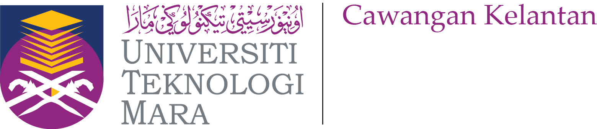
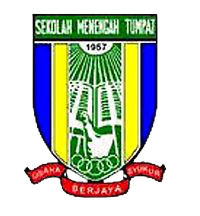

Bachelor of Business Administration (HONS.) Business Economics March 2019 — July 2023
Universiti Teknologi MARA (UiTM) Kelantan Branch, Kota Bharu Campus
Subject taken:Financial Management, Intermediate Microeconomics, International Economics, Web Design and Content Management, Critical and Creative Thinking for Information Technology Solution, Arabic Languange, Human Resource Management, Statistical Method and Business Law
C.G.P.A :3.70

Sekolah Menengah Kebangsaan Tumpat (Form6)
C.G.P.A : 3.59
Sekolah Menengah Kebangsaan Tumpat
Sijil Pelajaran Malaysia (S.P.M): A1 for Bahasa Melayu, Prinsip Akaun, Physic, Add Math and Pendidikan Islam